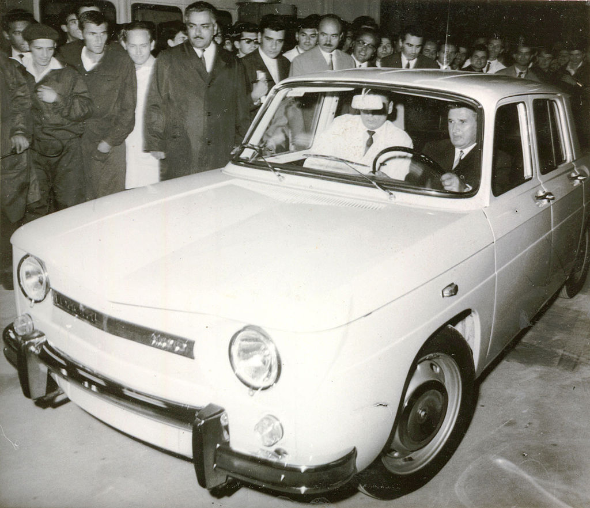
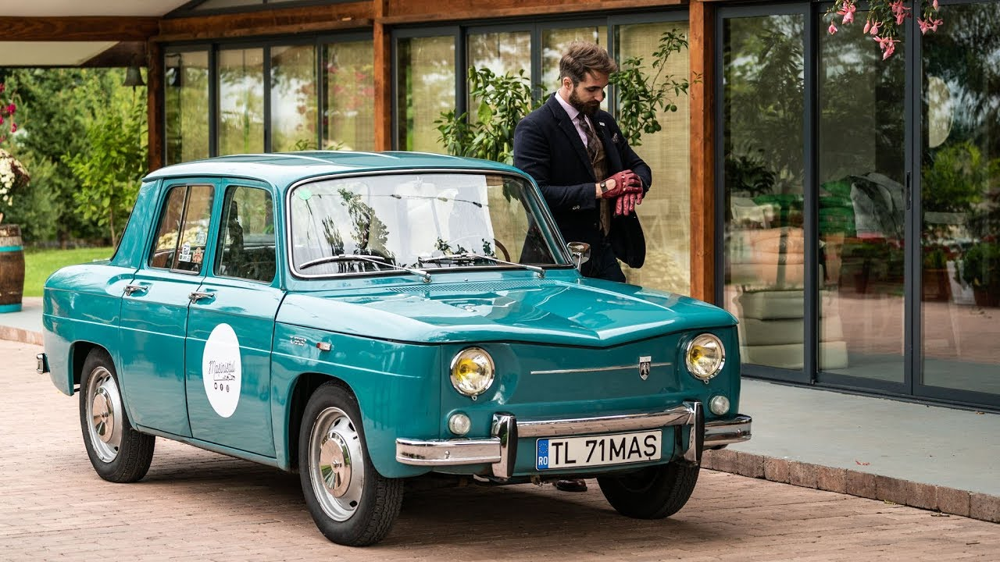

Dacia 1100
Dacia 1100 a fost primul model de autoturism produs de producătorul român Automobile Dacia S.A., fiind o asamblare în sistem CKD a modelului francez Renault 8. Între 1968 și 1971 au fost produse 37.546 de autoturisme.
Dacia 1100 era bazată pe Renault 8, o berlină cu tracțiune și motor pe spate. Modelul a fost disponibil în următoarele culori: verde turcoaz (verde 57), roșu grenat (roșu 28), crem (alb 40), gri deschis (gri 83), albastru (albastru 68). Motorul Renault Cléon-Fonte ("Sierra") dezvolta 46 CP (35kW) la 4600 turații și propulsa autoturismul până la 132 km/h. Era montat longitudinal pe spate și răcit cu apă. Prețul inițial a fost în jur de 55.000 Lei, în condițiile în care salariul mediu net în 1968 era de 1.139 Lei. Vânzările totuși au continuat să fie foarte bune, chiar și după ce a fost lansat modelul 1300 în 1969, modelul 1100 fiind fabricat în paralel cu acesta încă 2 ani.
Mașina prim-secretarului
Primul automobil ieșit pe poarta fabricii la deschiderea din 20 august 1968 a fost făcut cadou Secretarului General al Partidului Comunist Român, Nicolae Ceaușescu. Pe o plachetă comemorativă din compartimentul motorului se poate citi: "Primul autoturism de serie fabricat în RSR. Muncitorii, inginerii și tehnicienii constructori de mașini, vă aduc dumneavoastră tovarășe Nicolae Ceaușescu prinosul de recunoștință pentru inițierea producției de autoturisme în România și pentru grija permanentă ce o purtați dezvoltării industriei noastre socialiste." În realitate, Nicolae Ceaușescu a primit modelul nr. 75. Acesta se află astăzi în colecția de vehicule cu interes istoric al Automobil Clubul Român.
Dacia 1100S
În 1971 a fost lansat un model cu același motor, dar reglat la 65 CP, Dacia 1100S. A fost produs în mai puțin de 100 de unități, fiind disponibil doar pentru competiții și ministerul de interne. A participat la Campionatul Național de Raliuri în anii 1970. Dacia 1100S poate fi identificată prin cele 4 faruri rotunde.
Producție
Inițial, Dacia 1100 era identică cu un Renault 8, doar emblema era diferită. Toate piesele mari erau livrate din Franța și Spania, apoi asamblate în România. Motoarele și cutiile de viteze veneau gata montate, trebuia doar introdus ulei în ele. Caroseria era sudată și vopsită local. Începând cu 1969, se fabrică în România anvelopele, radiatorul, geamurile[8], precum și instalațiile electrice, tapițeria, scaune. Astfel se putea menține un cost scăzut și un ritm constant de fabricație. Deși producția nu a fost integral asimilată în România, piesele de schimb au fost disponibile destul timp.
Vehiculul a fost dezvăluit la Salonul Auto de la Paris din 2008.